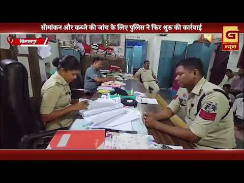
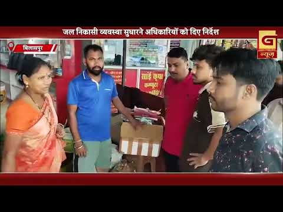
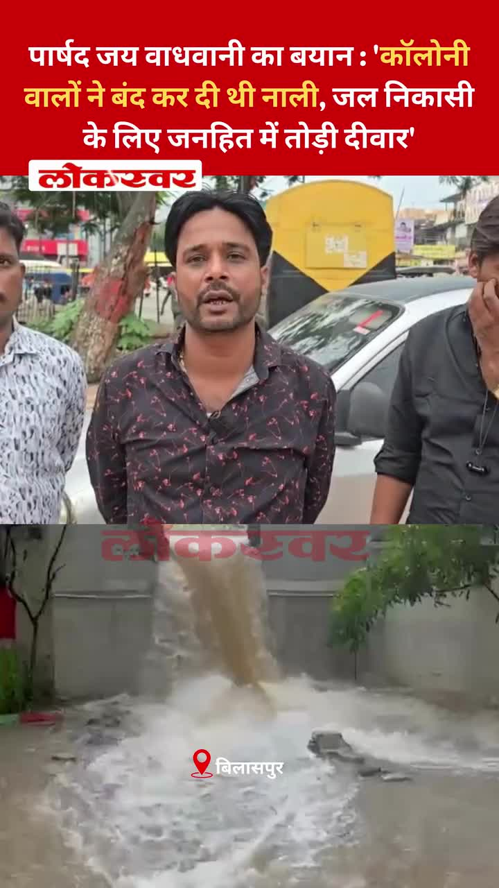
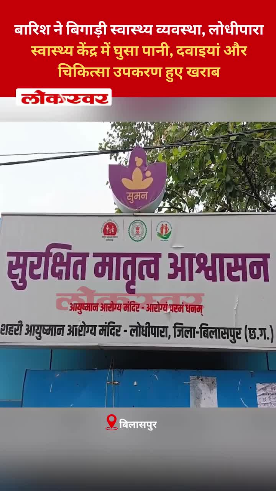

Bilaspur News Hub
EVENT2

Nai Dunia Bilaspur · Published: Sun, 19 Ju | Scraped: 2026-07-19 08:10:11
Bilaspur is experiencing relentless heavy rainfall with thunderstorms expected to persist until July 23. Residents are advised to stay cautious and avoid flood-prone areas.

Lokswar · Published: Sun, 19 Ju | Scraped: 2026-07-19 08:10:11
The weather department has issued a heavy rain alert for Chhattisgarh covering the next 48 hours. People should prepare for possible flooding and travel disruptions.
GOVERNMENT7

Nai Dunia Bilaspur · Published: Sun, 19 Ju | Scraped: 2026-07-19 05:05:07
The Chhattisgarh High Court has ruled that children who harass their parents may lose their right to reside with them. The verdict aims to protect elderly and vulnerable family members from abuse.

Nai Dunia Bilaspur · Published: Sun, 19 Ju | Scraped: 2026-07-19 08:10:11
The High Court ruled that age cannot be decided solely by Aadhaar card, providing significant relief for accident compensation claims. This decision ensures more reliable age verification methods for legal purposes.

Nai Dunia Bilaspur · Published: Sun, 19 Ju | Scraped: 2026-07-19 09:54:14
The Chhattisgarh High Court ruled that a second wife is eligible for family pension if the first wife has passed away, ensuring financial security for remarried widows. The judgment clarifies pension rights under state civil service rules.

Nai Dunia Bilaspur · Published: Sun, 19 Ju | Scraped: 2026-07-19 11:09:31
A Congress leader in Bilaspur was attacked in a murder-for-hire plot. Police have arrested two suspects, while the mastermind remains at large.
G News Bilaspur · Published: 2026-07-18 | Scraped: 2026-07-18 14:51:29
Heavy rains caused flooding in Dhuma village, submerging more than 150 houses. Residents face stagnant water and urgent relief needs. Authorities have been alerted to provide assistance.

G News Bilaspur · Published: 2026-07-18 | Scraped: 2026-07-18 14:51:29
Allegations suggest that 10 of the 13 acres belonging to the historic Sadar Kotwali police station have disappeared. This raises concerns about land encroachment and official negligence. An inquiry has been ordered to verify the status.

G News Bilaspur · Published: 2026-07-18 | Scraped: 2026-07-18 14:51:29
MLA Sushant Shukla rode a bike to inspect flood-affected zones in his constituency. He assessed damage and coordinated relief efforts with local officials. The visit highlighted the urgent need for infrastructure repair.
INFRASTRUCTURE1

G News Bilaspur · Published: 2026-07-19 | Scraped: 2026-07-19 09:54:14
Heavy rain turned loose rubble into a hazard on the under‑construction Dhekha National Highway, creating deep mud, traffic jams and several accidents. Commuters face long delays and safety risks as work remains stalled.
INSTAGRAM NEWS15
Bilaspur's smart city drainage system has been recognized with an award, highlighting the city's commitment to modern infrastructure. The achievement reflects improved urban planning and flood management.


Dreaming of a Government Job? 🚨 This is your sign to start today!Career Power Adda 24×7, Bilaspur is offering a Monsoon Offer – Flat 50% OFF on ALL Batches. Learn from experienced faculty, attend regular mock tests, get personal mentorship, and prepare in smart classrooms with both Hindi & English medium options.Don’t let this opportunity pass. Visit today, attend a demo class, and take the first step toward your dream government job. 💼📚📍 Near Agrasen Chowk, Opp. Vinayak Netralaya, Bilaspur💬 Tag a friend who’s preparing for government exams and save this post for later!#bilaspurct #bilaspur #career #careeradda #adda247 by @bilaspurct


स्मार्ट मीटर को लेकर अफवाहों से बचें। सही जानकारी अपनाएं, जागरूक उपभोक्ता बनें।स्मार्ट मीटर और 'मोर बिजली' ऐप के जरिए अपनी बिजली खपत को बेहतर ढंग से समझें। सही जानकारी के साथ बिजली का प्रबंधन करें और वास्तविक खपत के अनुसार पारदर्शी बिलिंग का लाभ उठाएं।हमारे व्हॉट्सऐप चैनल से जुड़ने के लिए लिंक पर क्लिक करें...https://whatsapp.com/channel/0029VbBdXyRJf05ivBgauG3V#SmartMeterApnao #HarGharSmartMeter#SwitchToSmartMeter #SmartMeterBenefits #Chhattisgarh @MinOfPower @vishnudsai @ChhattisgarhCMO by @bilaspurdist


A social media update posted by @bilaspurdist on Instagram, likely sharing local news or community content. The post may include photos, stories, or announcements relevant to Bilaspur residents.


Beware Bilaspur! Petrol pumps are allegedly selling water instead of fuel, defrauding customers and risking vehicle damage.


New Horizon Dental College has started admissions for the BDS 2026 batch, urging quick applications to secure seats. This move expands dental education opportunities in the area.


The district promotes solar panel installation to cut electricity costs. Under PM Surya Ghar free bijli scheme, residents get subsidies and free power, boosting renewable energy and savings.


Councilor breaks drain after residents block it / पार्षद ने कॉलोनी वालों द्वारा बंद की गई नाली तोड़ी
Councilor Jay Wadhwani said residents had blocked a drain, causing waterlogging. To restore drainage, he broke the wall in the public interest.

Heavy rains caused water to flood the Lodhipara health centre, damaging stored medicines and disrupting medical services. The facility is now non‑functional until repairs are made.
In disaster situations, all officials and staff are required to be present at headquarters, with immediate cancellation of holidays. This ensures coordinated response and effective crisis management.
The administration has assured that anyone providing information will have their identity kept confidential, encouraging transparent reporting without fear of exposure.
Under CM Vishnu Deo Saha’s leadership, the government is urging people to seek proper medical treatment for snakebites rather than relying on superstitions. This aims to reduce fatalities and improve outcomes.
After prolonged rains, MLA Sushant Shukla toured the water‑logged zones in Bilaspur to assess damage and coordinate relief. He inspected key locations and promised immediate support for affected residents. The visit highlighted the urgent need for drainage and infrastructure repairs.
NEWS13

Nai Dunia Bilaspur · Published: Sat, 18 Ju | Scraped: 2026-07-18 12:51:41
<img src="https://img.naidunia.com/naidunia/ndnimg/18072026/18_07_2026-apollo_hospital_meeting.jpg" />बिलासपुर के अपोलो अस्पताल में स्वास्थ्य सुविधाओं में आयुष्मान कार्ड का लाभ न मिलने को लेकर जिला प्रशासन के चेंबर में कांग्रेस पदाधिकारियों, अपोलो अस्पताल के सीईओ व जिला प्रशासनिक अधिकारियों की बैठक

CG Wall · Published: Sat, 18 Ju | Scraped: 2026-07-18 12:51:41
बिलासपुर..न्यायालय परिसर में शासकीय कार्य में बाधा डालने, पुलिस कर्मियों से धक्का-मुक्की, गाली-गलौज और धमकी देने के मामले में बिलासपुर पुलिस ने मुख्य आरोपी अमृतदास डहरिया को गिरफ्तार कर न्यायिक रिमांड पर भेज दिया है। पुलिस के अनुसार, 15 नवंबर 2025 को थाना तखतपुर के एक एट्रोसिटी एक्ट प्रकरण के आरोपी

CG Wall · Published: Sat, 18 Ju | Scraped: 2026-07-18 12:51:41
बिलासपुर…भारतीय जनता युवा मोर्चा (भाजयुमो) ने संगठन को जमीनी स्तर पर मजबूत करने की रणनीति के तहत बिलासपुर के युवा नेता रौशन सिंह को मुंगेली जिला सह-प्रभारी नियुक्त किया है। प्रदेश नेतृत्व के इस फैसले को युवा कार्यकर्ताओं को संगठन में अधिक जिम्मेदारी देने की दिशा में महत्वपूर्ण कदम माना जा रहा

Lokswar · Published: Sat, 18 Ju | Scraped: 2026-07-18 12:51:41
<p>गुजरात के अहमदाबाद में एक अवैध पटाखा फैक्ट्री में हुए भीषण विस्फोट ने आठ लोगों की जान ले ली, जबकि 15 लोग घायल हो गए। धमाका इतना जोरदार था कि इसकी आवाज करीब पांच किलोमीटर दूर तक सुनाई दी। यह हादसा अहमदाबाद के वस्त्राल इलाके में रामोल-गतराड रोड स्थित एक अवैध रूप से संचालित पटाखा …</p>
<p>The

Lokswar · Published: Sat, 18 Ju | Scraped: 2026-07-18 12:51:41
<p>(शैलेश सोनी) : गौरेला-पेंड्रा-मरवाही जिले के पेंड्रा थाना क्षेत्र से एक गंभीर मामला सामने आया है। यहां संचालित स्वामी आत्मानंद इंग्लिश मीडियम स्कूल के एक शिक्षक पर अपनी ही छात्रा को बहला-फुसलाकर अपने घर ले जाने का आरोप लगा है। परिजनों की लिखित शिकायत पर पेंड्रा थाना पुलिस ने आरोपी शिक्षक अमित शर्

CG Wall · Published: Sat, 18 Ju | Scraped: 2026-07-18 14:51:29
बिलासपुर… रोटरी ई-क्लब ऑफ बिलासपुर यूनाइटेड का 9वां इंस्टॉलेशन समारोह शनिवार को गरिमापूर्ण वातावरण में संपन्न हुआ। समारोह में रोटरी की परंपरा के अनुरूप नए पदाधिकारियों ने दायित्व ग्रहण किया। रोटेरियन प्रमोद अग्रवाल ने अध्यक्ष, रौनक साव ने सचिव तथा विमलेश अग्रवाल ने कोषाध्यक्ष का कार्यभार संभाल

CG Wall · Published: Sat, 18 Ju | Scraped: 2026-07-18 14:51:29
बिलासपुर… रतनपुर थाना पुलिस ने ग्राम लखराम में सरेआम धारदार चाकू लहराकर राहगीरों को डराने-धमकाने वाले दो आदतन बदमाशों को गिरफ्तार कर जेल भेज दिया। आरोपियों के कब्जे से दो धारदार चाकू जब्त किए गए हैं। पुलिस के अनुसार, 17 जुलाई को सूचना मिली कि ग्राम लखराम के अलग-अलग स्थानों पर दो युवक हाथ में च

CG Wall · Published: Sat, 18 Ju | Scraped: 2026-07-18 14:51:29
बिलासपुर..छत्तीसगढ़ शासन के निर्देश पर बिलासपुर पुलिस ने जिले में अवैध प्रवासियों, अवैध रूप से रह रहे बांग्लादेशी नागरिकों और संदिग्ध गतिविधियों में शामिल बाहरी व्यक्तियों के खिलाफ व्यापक अभियान शुरू कर दिया है। पुलिस अधीक्षक रजनेश सिंह ने स्पष्ट किया है कि जिले की सुरक्षा और कानून-व्यवस्था से किसी

The Hitavada · Scraped: 2026-07-19 05:05:07
The Hitavada · Scraped: 2026-07-19 05:05:07
The Hitavada · Scraped: 2026-07-19 05:05:07

The Hitavada · Scraped: 2026-07-19 05:05:07
The Hitavada · Scraped: 2026-07-19 05:05:07
OTHER1
G News Bilaspur · Published: 2026-07-18 | Scraped: 2026-07-18 14:51:29
The broadcast titled '18 JUL 2026 EVN 02' is scheduled for 18 July 2026. It will air at 02:00 EVN. Details will be updated closer to the date.
POLICE12

Nai Dunia Bilaspur · Published: Sun, 19 Ju | Scraped: 2026-07-19 05:05:07
During a high-speed chase, Bilaspur police apprehended a thief after recovering stolen goods. The swift action turned the victim's anxiety into relief, showcasing effective law enforcement.

Nai Dunia Bilaspur · Published: Sun, 19 Ju | Scraped: 2026-07-19 08:10:11
A violent murder occurred in Ratanpur when a youth was attacked and killed on a rooftop following a drunken argument. The assailants used a hammer and bricks, leading to fatal injuries.

Lokswar · Published: Sun, 19 Ju | Scraped: 2026-07-19 08:10:11
A major reshuffle in the police department sees 16 officers and staff reassigned to different postings. The changes aim to improve administrative efficiency and operational coverage.

Nai Dunia Bilaspur · Published: Sun, 19 Ju | Scraped: 2026-07-19 09:54:14
Armed robbers in burqas entered a house in Kota, threatened a woman with a pistol, and stole her jewellery before fleeing. The incident highlights rising concerns over targeted home invasions in the region.

Lokswar · Published: Sun, 19 Ju | Scraped: 2026-07-19 09:54:14
A mother and her ten‑month‑old infant were found dead in a field borewell in Raigarh, victims of a brutal double murder. The shocking crime has sparked widespread outrage and a police investigation.

CG Wall · Published: Sun, 19 Ju | Scraped: 2026-07-19 11:09:31
Kota police in Bilaspur quickly solved a 25‑lakh gold‑silver theft, recovering the stolen ornaments within hours.

CG Wall · Published: Sun, 19 Ju | Scraped: 2026-07-19 11:09:31
A drunken brawl in Akaltari, Bilaspur escalated to a brutal rooftop murder, sending shockwaves through the community.

CG Wall · Published: Sat, 18 Ju | Scraped: 2026-07-18 16:49:28
Two men were arrested for hiring a killer to attack a morning walker in Bilaspur, offering a 5‑5 lakh reward. The victim was critically injured near the railway hospital and later died. Police investigated the contract killing and detained the culprits.

CG Wall · Published: Sat, 18 Ju | Scraped: 2026-07-18 18:49:02
सरकंडा पुलिस ने लाखों की नकबजनी का पर्दाफाश कुछ ही घंटों में कर दिया और शातिर आरोपी शुभम को गिरफ्तार कर लिया। तेज़ कार्रवाई से मामले का त्वरित समाधान हुआ।

G News Bilaspur · Published: 2026-07-19 | Scraped: 2026-07-19 09:54:14
Thieves took advantage of heavy rain and darkness to break into a local kirana shop and steal goods. Police have launched a search for the culprits and urged residents to secure their premises.

G News Bilaspur · Published: 2026-07-19 | Scraped: 2026-07-19 09:54:14
A couple was killed in a land dispute, and their bodies were burned to destroy evidence. The incident highlights rising property violence in the region, prompting an investigation.
G News Bilaspur · Published: 2026-07-18 | Scraped: 2026-07-18 14:51:29
An uncontrolled trailer crashed on Ratanpur bypass, killing Mahima Kosle, a woman employed in road cleaning. The incident highlights road safety concerns for sanitation workers. Police have launched an investigation.
SOCIAL2

BREAKINGGGV team supports 2000 families in Bilaspur / बिलासपुर में जीजीवी की टोली ने दो हजार परिवारों को सहारा दिया
Nai Dunia Bilaspur · Published: Sun, 19 Ju | Scraped: 2026-07-19 05:05:07
A GGV team arrived at a spot in Bilaspur where life had halted, providing food and moral support to around two thousand families. The effort helped restore hope and basic necessities in the affected area.

Bol Bam devotees protest train cancellation, plan G.M. office siege / सावन मास में बोल बम श्रद्धालुओं ने ट्रेन रद्द करने के विरोध में जीएम कार्यालय घेराव शुरू किया
Nai Dunia Bilaspur · Published: Sun, 19 Ju | Scraped: 2026-07-19 11:09:31
Bol Bam devotees in Bilaspur staged a protest against train cancellations, planning a siege of the G.M. office from Ramlila Maidan.
YOUTUBE VIDEOS7


GRAND NEWS BILASPUR:अकलतरी में युवक की निर्मम ह'त्या, क्षेत्र में लगातार ...


GRAND NEWS BILASPUR:बिलासपुर में जलभराव वाले इलाकों में डायरिया फैलने का डर, स्वास्थ्य विभाग अलर्ट..
GRAND NEWS BILASPUR:बिलासपुर में जलभराव वाले इलाकों में डायरिया फैलने का ...


GRAND NEWS BILASPUR : EVENING FINAL NEWS 18.07.2026 NEWS @News18MPChhattisgarh @IBC24InNews @ZeeNews ...
GRAND NEWS BILASPUR:पहली ही बारिश में डूबा बिलासपुर @News18MPChhattisgarh ...
Heavy rains caused massive flooding in Bilaspur, submerging roads and homes. The disaster disrupted daily life and required emergency response. Authorities are working to mitigate the impact and provide relief.
बिलासपुर नगर निगम ने स्वच्छता दीदियों को मानसून के दौरान सुरक्षा प्रदान करने के लिए रेनकोट वितरित किए। यह कदम उनके कल्याण और सफाई कार्य को सुचारू रखने पर केंद्रित है।
बिलासपुर के पचरी घाट पर पुलिस ने अवैध गतिविधियों के संदेह में छापा मारा। अभियान के दौरान किसी की गिरफ्तारी हुई या नहीं, इसकी जानकारी अभी awaiting है।